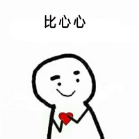
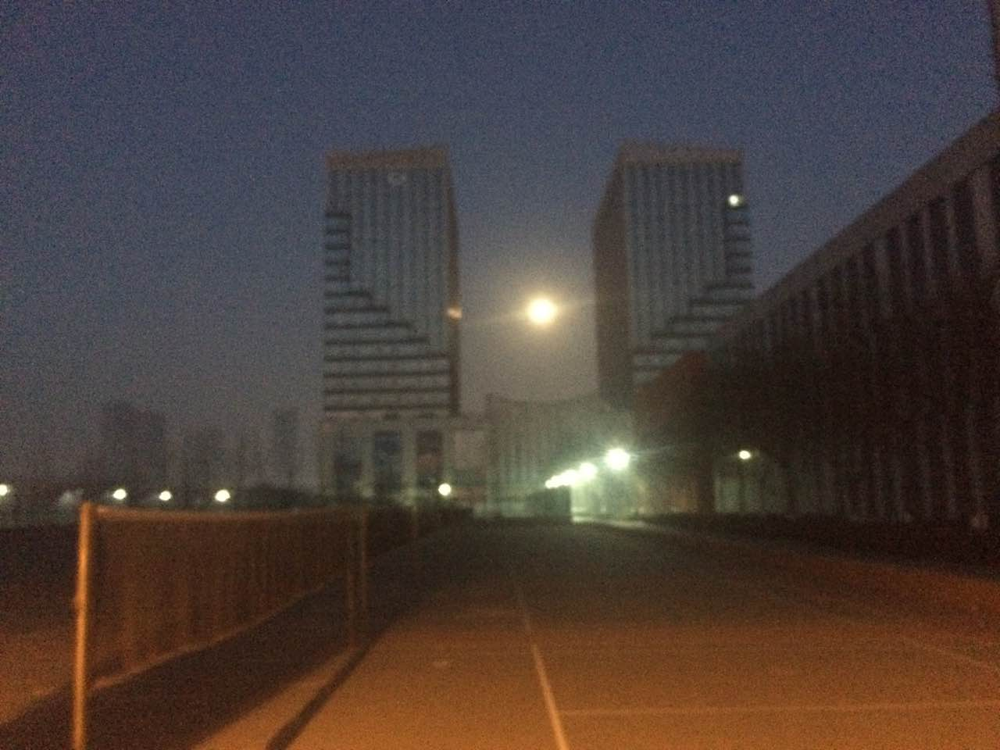

-
年后初聚

2017年2月11日。这一年真是有史以来最累的一年，总算是过去了。亲爱的也去学了，有好多好多话想和玲儿说，可在学校见到的那一刻，突然感觉心里好踏实，脑袋空白的一句也想不起来。
亲爱的还记得这个场景不，那天早上的月亮特别圆...

冬天也快要过去了，今天天气真不错，阳光暖洋洋的，晒在身上很舒服。我们从西门出去路边有好多摆摊卖吃的，飘着阵阵香气。要不是打算吃火锅真想都尝试一下。
海底捞火锅果然人很多，排队等了好久，还好有个娱乐的象棋，把玲儿给悄悄的鄙视了一下，不到几分钟就不想玩了哈哈哈。火锅也挺香的，番茄味道，下次可以换个不同的口味尝试一下呢。吃好后感觉时间还早，买的五点四十多的票，查了下距离感觉挺近的就没着急走太早。结果坐公交居然堵车，等到换乘站打车过去也已经来不及了。本来这事嘛一点儿都不怪玲儿呢，这货非得积极认错，让我不接受都感觉对不起了。准备趁机签订个不平等条约来着，可这货积极认错，坚决不改。也没打劫成。 到车站后改签到八点半，亲爱的陪我在寒风中待了好久，真的很感动~~ (๑¯∀¯๑)
© Copyright © 2017.
For My Princess MissRing